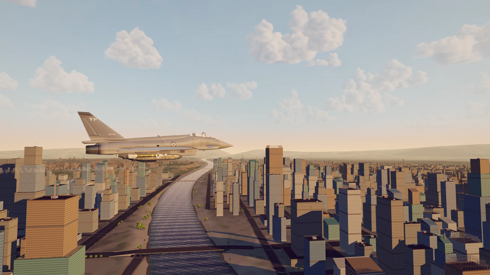
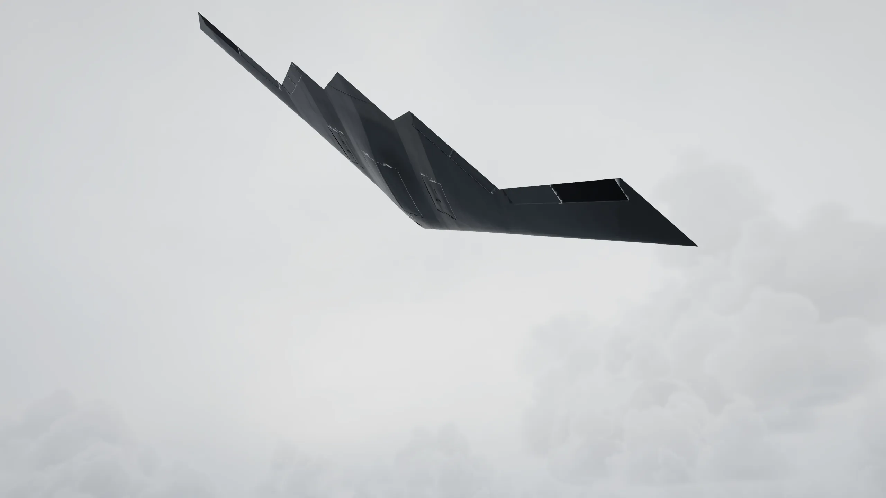
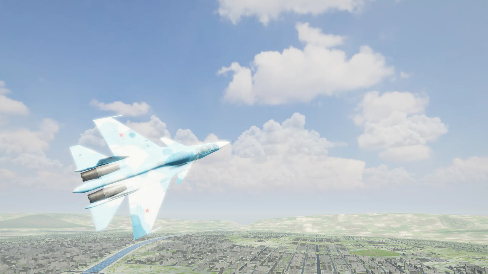
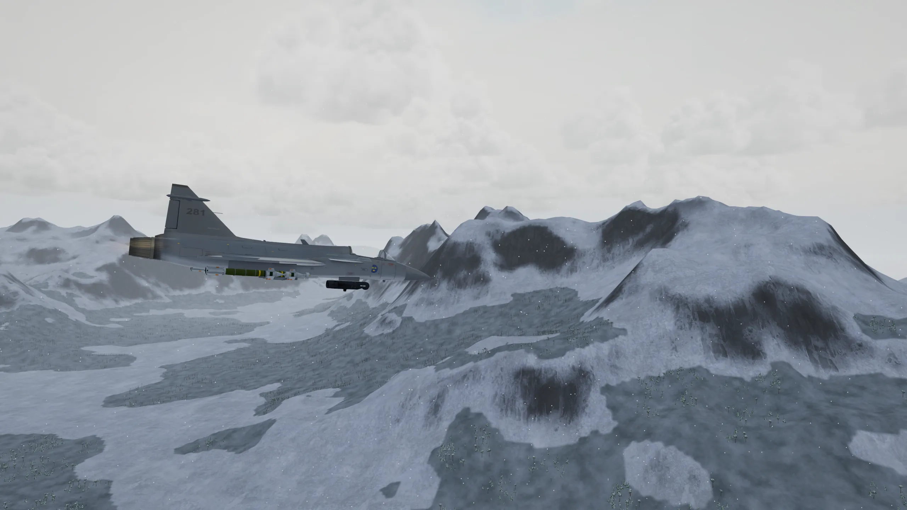
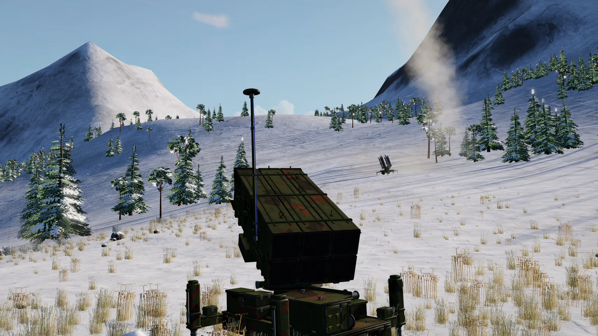
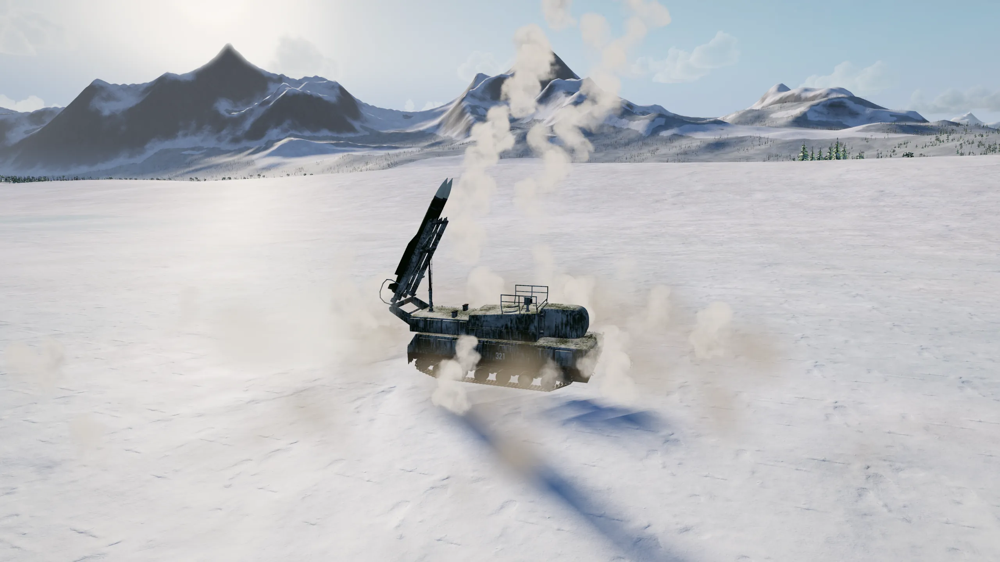

Самолёты
Фронтовые бомбардировщики, штурмовики, истребители с ударной подвеской и стратеги.

Су-34 с бомбами УМПК

Typhoon вдоль реки, на малой высоте

B-2A над облаками

Ту-22М3 после пуска ракеты

Су-33 в развороте над городом

F-15E на закате

Gripen над заснеженными горами

F-35A в наборе высоты
Зенитные комплексы
Каждую пусковую ставишь сам: в городе, у дороги, в лесу.

С-400 среди домов

Patriot поднимает контейнеры

«Бук-М1» в горах

SAMP/T утром у дороги

«Тор-М2» у города

NASAMS на снегу

«Бук-М1» в момент пуска

Ещё режимы
- Мульти-волна
- Крылатые ракеты, дроны и баллистические ракеты идут на позиции волнами.
- Онлайн
- Бои с людьми и сезонный рейтинг.
- Обучение
- С него стоит начать, если впервые за штурвалом или за пультом ЗРК.
- Режим съёмки
- Свободная камера, чтобы снять свой бой или технику крупным планом.
Бесплатно. В браузере на компьютере и телефоне и в Telegram.
Шесть языков: русский, английский, украинский, немецкий, испанский, французский. Между боями - задания на день и неделю, дерево исследований и окраски за кристаллы.
Играть